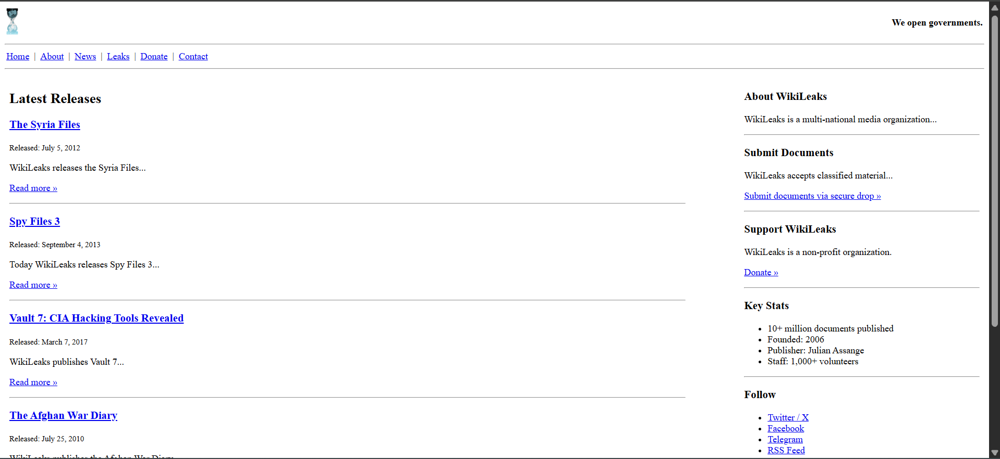

Sobre mí... Dario Garay
De los temas que se presentan:
Lo conozco aunque sea poquito: tuve una clase de HTML en la secundaria, pero es todo.
Me interesa conocer más: sobre herramientas para hacer sitios web, aprender CSS y JavaScript.
Experiencia: Nunca he realizado proyectos web personalmente.
Mis Tareas:
Evidencia de trabajo. Páginas wikileaks:
Versión 1
Sitio web de la versión 1
Versión 2

Sitio web de la versión 2
Versión 3
Sitio web de la versión 3
Enlaces a compañeros
Álvaro:
Sitio web de Álvaro
Vale:
Sitio web de Vale
Sitio biografías artistas
Actividad Sitio web de biografía de artistas
Página Fea
Actividad Sitio web Feo
Actividad en equipo 11 de Abril
Actividad en equipo
Actividad picnic.html 14 de Abril
Actividad 14 de abril